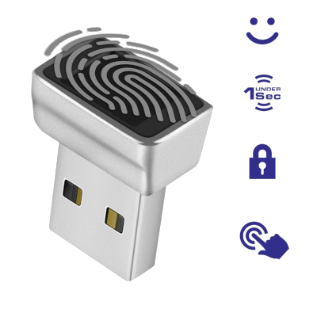

Esta Política de Privacidade descreve como suas informações pessoais são coletadas, usadas e compartilhadas quando você se cadastra ou usa https://digital.ceuvago.com/.
Quando você se cadastra em nosso site, coletamos as informações pessoais que você nos fornece, como seu nome e endereço de e-mail.
O WebAuthn é um padrão web para autenticação segura na Web. Ele permite que os usuários se autentiquem em um serviço através de um dispositivo autenticador em vez de uma senha. Este módulo atualmente é apenas para fins demonstrativos de como funciona o WebAuthn.
WebAuthn é uma especificação da web que permite a autenticação sem senha. Com a impressão digital, é parte do conjunto de tecnologias que são frequentemente referidas como autenticação biométrica. Em um nível alto, o processo é geralmente assim:

Registro do usuário: Um usuário inicialmente se registra em um site usando um método de autenticação tradicional (por exemplo, usuário e senha). Durante esse processo, o site pode solicitar que o usuário registre um método de autenticação biométrico, como uma impressão digital.
Coleta de dados biométricos: O dispositivo do usuário (como um smartphone ou computador portátil com um leitor de impressões digitais) coletará a impressão digital do usuário e criará uma representação digital desses dados. Essa representação é geralmente criptografada ou de outra forma segura para proteger a privacidade do usuário.
Envio de dados ao servidor: A representação digital da impressão digital do usuário é então enviada ao servidor do site. O servidor armazena essa representação para uso futuro.
Autenticação: Quando o usuário retorna ao site e precisa se autenticar, ele será solicitado a fornecer sua impressão digital novamente. O dispositivo do usuário coleta a impressão digital, cria uma representação digital e a envia para o servidor.
Verificação: O servidor compara a representação digital recebida com a que foi armazenada durante o processo de registro. Se elas corresponderem, o servidor confirmará que o usuário é quem afirma ser e permitirá que ele acesse o site.
Resposta ao cliente: O servidor envia uma resposta ao cliente, confirmando que a autenticação foi bem-sucedida.
Essa descrição é bastante simplificada e o processo real envolve vários passos técnicos complexos para garantir a segurança dos dados do usuário. Isso inclui coisas como o uso de criptografia de ponta a ponta, verificações de segurança rigorosas e o uso de chaves de segurança físicas ou outros dispositivos de autenticação em alguns casos.
Importante ressaltar que, ao usar WebAuthn com biometria, o servidor web nunca tem acesso direto aos dados biométricos (como a impressão digital real). Em vez disso, os dados biométricos são usados para criar uma chave de autenticação no dispositivo do usuário, e essa chave é o que é compartilhado com o servidor. Isso ajuda a proteger a privacidade do usuário e garante que os dados biométricos não possam ser roubados, mesmo que o servidor seja comprometido.
* * Script de teste do servidor para a biblioteca WebAuthn. * * CLIENTE | SERVIDOR * ------------------------------------------------------------ * | * REGISTRO * | * window.fetch------------> | getCreateArgs (argumentos de criação) * | | * | | * navigator.credentials.create <----------'(criar credenciais de navegador) * | | * | | * '--------------------> processCreate (processar criação) * | | * | | * alerta sucesso ou falha | <----------' * | * ------------------------------------------------------------ * | * VALIDAÇÃO * | * window.fetch------------------>getGetArgs (obter argumentos de obtenção) * | | * | | * navigator.credentials.get <------------' (obter credenciais de navegador) * | | * | | * '-----------------------> processGet (processar obtenção) * | | * | | * alerta sucesso ou falha | <------------' * * ------------------------------------------------------------ *
Usamos as informações pessoais que coletamos de você para fornecer os recursos e funcionalidades do site. Também podemos usar suas informações pessoais para nos ajudar a melhorar e otimizar nosso site.
Não compartilhamos suas informações pessoais com terceiros.
Você tem o direito de acessar as informações pessoais que temos sobre você e de solicitar que suas informações pessoais sejam corrigidas, atualizadas ou excluídas. Se você gostaria de exercer este direito, por favor, entre em contato conosco através das informações de contato abaixo.
Podemos atualizar esta política de privacidade de tempos em tempos para refletir, por exemplo, mudanças em nossas práticas ou por outras razões operacionais, legais ou regulatórias.
Para obter mais informações sobre nossas práticas de privacidade, se você tiver dúvidas ou se quiser fazer uma reclamação, entre em contato conosco por e-mail no endereço suporte@ceuvago.com.